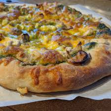

PizzaRecipe
Premium Pizza Crust

This is a double-rise dough typical of Neapolitan pizza. Two different rise
methods are provided, one overnight in refrigerator and the other with a
sponge
Prep Time: 30 mins Cook Time: 10 mins
Ingredients
- 1 1/2 teaspoons of active dry yeast
- 1 1/2 cups of water
- 3 cups of all-purpose flour
- 1 teaspoon of sea salt
Directions
- OVERNIGHT COLD RISE METHOD: In a large bowl, dissolve yeast in water. Stir in 2
cups of flour and salt; mix well. Stir in the remaining flour, 1/2 cup at a time,
beating well after each addition. When the dough has pulled together, turn it out
onto a lightly floured surface and knead until smooth and supple, about 15
minutes. Place dough in bowl dusted with flour cover with plastic wrap and
refrigerate overnight.
- SPONGE RISE METHOD: In a large bowl, dissolve yeast in
1/2 cup water. Stir in 1/2 cup of flour; mix well. Cover bowl with plastic wrap and let rise until foamy,
about 1 hour. Blend in remaining water, flour and salt; beat well. When the
dough has pulled together, turn it out onto a lightly floured surface and knead
until smooth and supple, about 15 minutes. Place dough in bowl dusted with
flour and cover with plastic wrap. Let rise until doubled, about 2 to 3 hours.
- Deflate the dough and turn it out onto a lightly floured surface. Divide the dough
into two equal pieces. Roll dough out to half of its final size. Let rest for 10 to 15
minutes (while you prepare desired pizza toppings). Preheat oven to 450
degrees F (230 degrees C).
- Stretch out dough over your floured knuckles and spin/toss 2 to 3 times until
desired size is achieved. Place dough on a baker's peel sprinkled with cornmeal
or a lightly greased pizza pan. Spread with desired toppings and bake on a pizza
stone in preheated oven for 8 to 10 minutes, or until golden brown. Let baked
pizza cool for 5 minutes before serving.